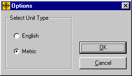

Units of Measurement
The ProFume Fumiguide functions in English and Metric units. Go to View in the toolbar above and select "Options." Then select either English and Metric units. You can change units at any time within a job, by following these same instructions.
